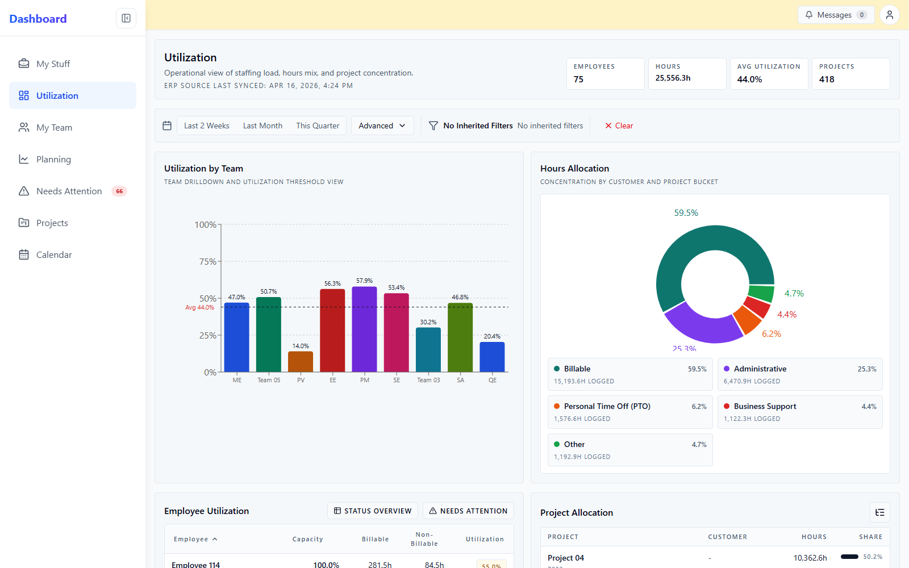
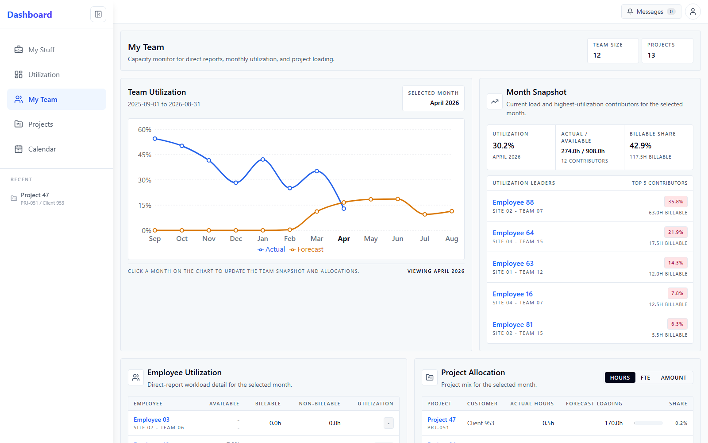
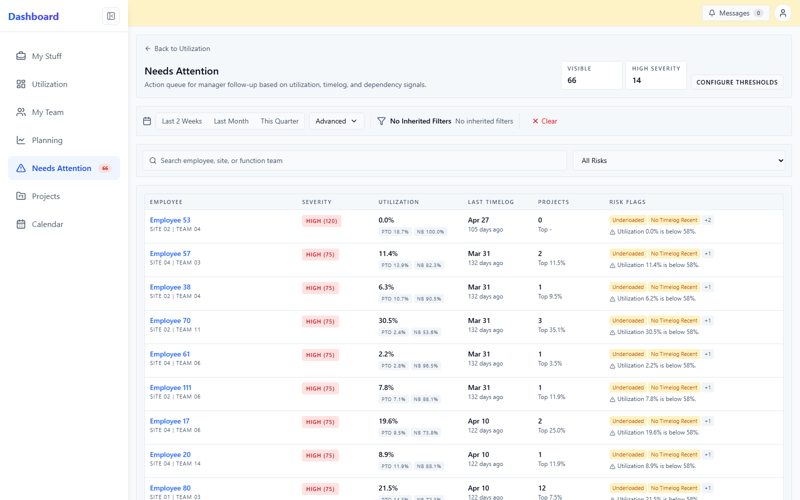
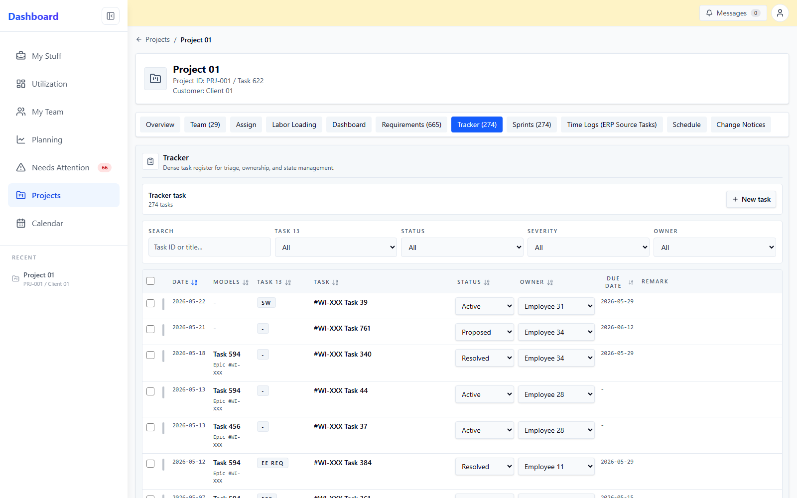
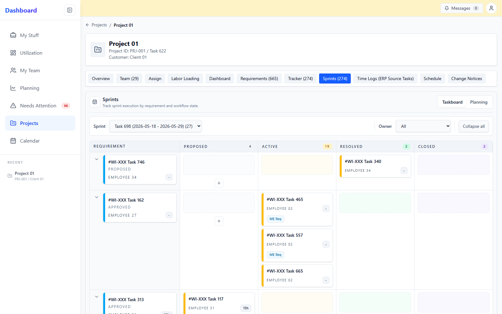

Selected work / engineering operations
Engineering Operations Dashboard
Connect fragmented engineering data into one operating view for engineers, project managers, and leaders.
IMPLEMENTED APPLICATION
SANITIZED SCREENSHOTS
FULL-STACK DEVELOPMENT

01 / ARCHITECTURE
Integrate — do not replace
Bring engineering signals together without rebuilding every source system.
PLAYWRIGHT AUTOMATION
IHS Intelligent BOM
Browser-driven acquisition for engineering BOM intelligence where direct API integration was not the practical path.
React 19
TypeScript
Vite
Tailwind
Recharts
Python
FastAPI
PostgreSQL
Pytest
Vitest
Playwright
02 / MANAGEMENT VIEWS
From reporting to intervention
See capacity. Then see where attention is needed.


03 / EXECUTION EVIDENCE
A dashboard should drill into the work
Management signals stay connected to project and sprint evidence.


ORGANIZATION SIGNAL
→
TEAM
→
EMPLOYEE / PROJECT
→
TASK / SPRINT
04 / SCALE
20+
initial self-service users
→
~200
person design organization with shared visibility
Screenshots are from the implemented application. Employee, customer, project, site, team, task, and identifier text was pseudonymized for portfolio use; product behavior and aggregate operating signals were preserved.